| 日付 | 2018年12月24日（月） |
|---|---|
| 山域 | 道志山塊 |
| メンバー | 家族（妻、長女・7歳、長男・5歳） |
| 山行形態 | 子連れ日帰り |
| アクセス | 車 |
| ルート (Map) | 大月市民会館駐車場 (8:36) - (9:13) 厄王権現石碑 - (9:29) 四合目鳥居 - (10:13) 御前山 (10:47) - (11:52) 菊花山 (12:31) - (12:57) 登山口 - (13:28) 大月市民会館駐車場 |
今年最後の山行。御前山～菊花山に行ってみることにする。
比較的マイナーな山で九鬼山のついでに登られることも多いが、
今回はハードな行程は避けて、御前山～菊花山のみをターゲットに
登ってみることにする。
以前、岩殿山に登った時に使った駐車場に行ってみると
閉鎖されていて工事用車両が停まっている。
大月市民会館の駐車場に停めるように案内が出ている。
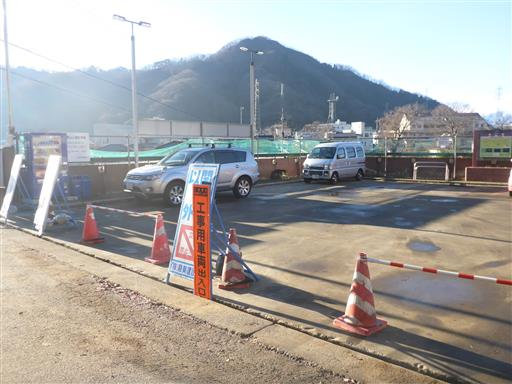
息子はクリスマスプレゼントでもらった双眼鏡を覗き込んでいる。
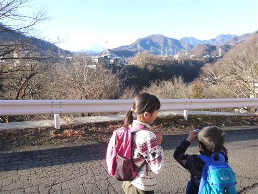
改めて大月市民会館の駐車場に移動し、車を停める。標高360m。
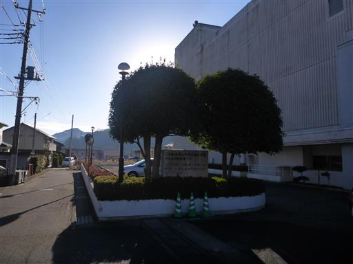
御前山の登山口を探すのにかなり迷ってしまった。
持っている地図は8年前の地図で国道の構造が大きく変わっており、
人に聞いてようやく登山口の厄王権現石碑に辿り着く。
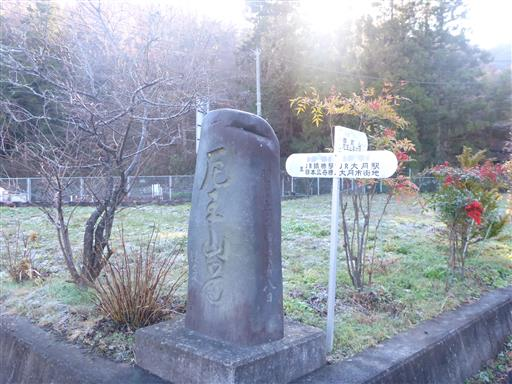
しばらくは通る車のない車道を歩いていく。
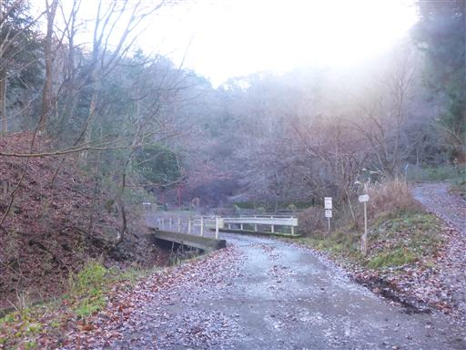
赤い鳥居に到着。御前山山腹にある厄王権現の鳥居だ。
ここから本格的な登山道が始まる。
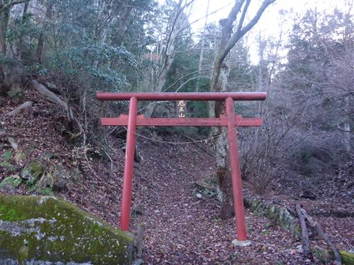
ホオノキの落ち葉が大量に落ちている。
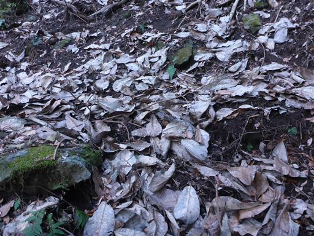
しばらく歩くと稜線に到着する。ここからは尾根道だ。
ここにも赤い鳥居が立っている。
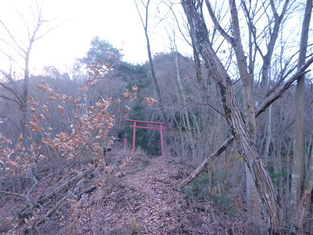
少し展望が広がる。真ん中の目立つ山は滝子山だ。
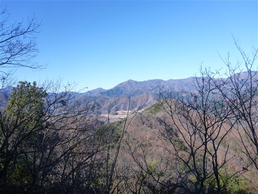
厄王権現に到着。岩にめり込むように建てられている。
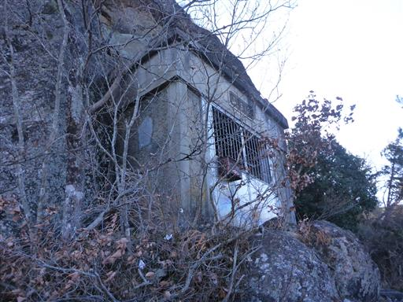
中を覗くと小さな社と狛犬が祀られている。
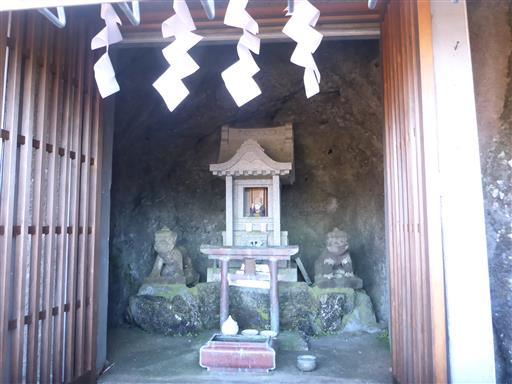
ここから山頂まではあと少し。しかし登山道は倒木だらけでかなり荒れている。
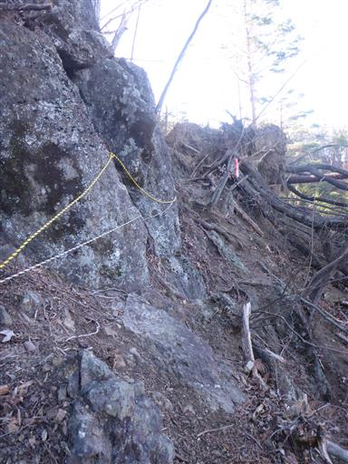
岩がちな地形だが慎重に歩けば問題はない。
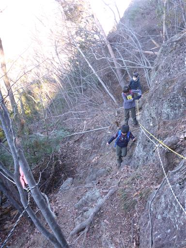
倒木の跡の滑りやすい斜面を登る。
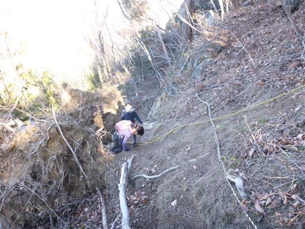
一登りで御前山に到着する。標高730m。
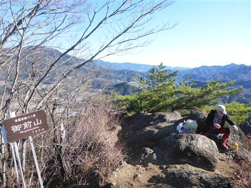
巨大な岩場の山頂で、一歩先は奈落の底だ。
その分展望は非常に良い。
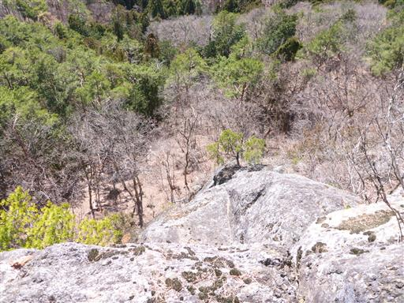
南には富士山を望むことができる。しかし半分雲に覆われてしまっている。
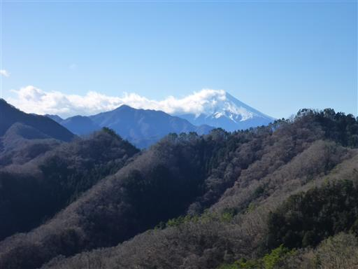
道志の目立たない山々。山座同定は難しい。
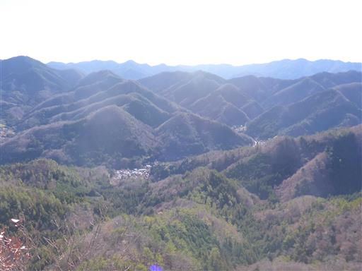
こちらは滝子山方面。
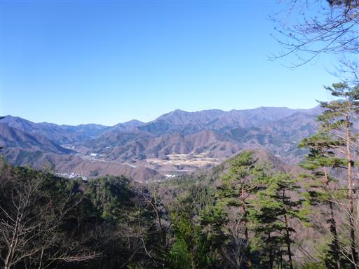
昼食後、子供達は山頂を移動しまくるのでちょっと落ち着かない。
もう落ちることは無いとは思うが、やっぱり不安だ。
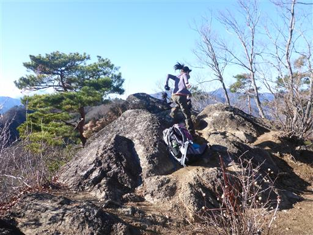
次なる目的地の菊花山を目指して尾根道を歩く。
途中で息子の双眼鏡が見つからず、山頂に引き返して探していたので時間を浪費してしまった…
結局ザックの中から見つかったが、もらったばかりのプレゼントを失くしたらちょっとかわいそうだ。
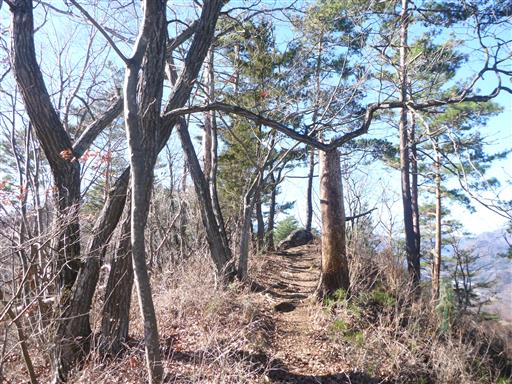
笹に覆われた道を歩く。途中まで順調だったが、
突然娘の機嫌が悪くなり、娘は大きく遅れてしまう。
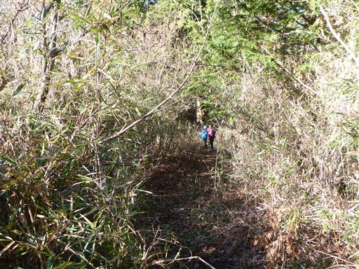
息子は順調に歩いていく。
一旦下った後の菊花山への登りは急斜面で結構きつい。
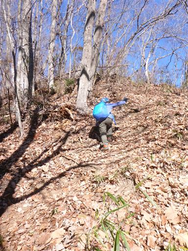
山頂直下は岩尾根の登りだ。

一足早く息子が山頂に到着。
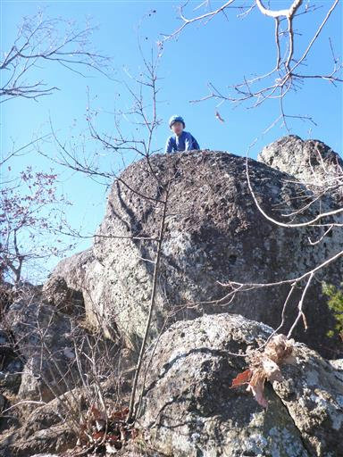
菊花山山頂。標高644m。
御前山に引き続き、こちらも素晴らしい展望の山頂だ。
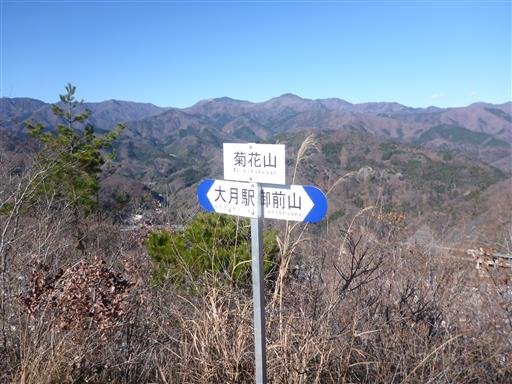
目の前には岩殿山。見事な岩壁が見える。
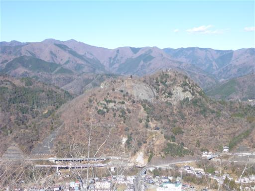
こちらは百蔵山と扇山。この辺りを代表する有名な二山だ。
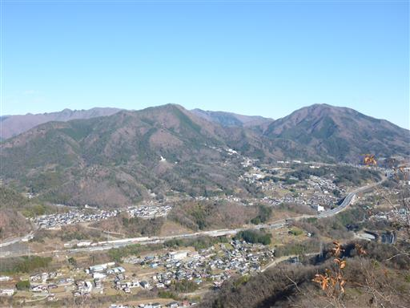
もちろん富士山も見える。残念ながらさらに雲に隠れてしまった。
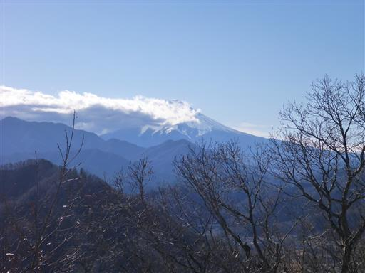
滝子山から黒岳の南大菩薩連嶺。
滝子山は下界からでも山頂からでも良く目立つ山だ。
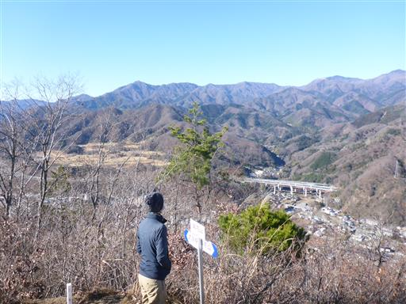
10分ほどして娘も到着。おやつを食べて休憩する。
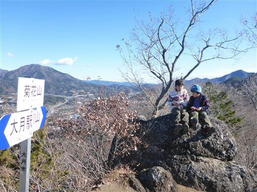
下山はそのまま大月駅に下る道を歩く。
かなりの痩せ尾根で素晴らしい展望の尾根道だ。
この道は手持ちの地図には載っていないが、歩いている記録は多かったので、
近年整備されたのかもしれない。
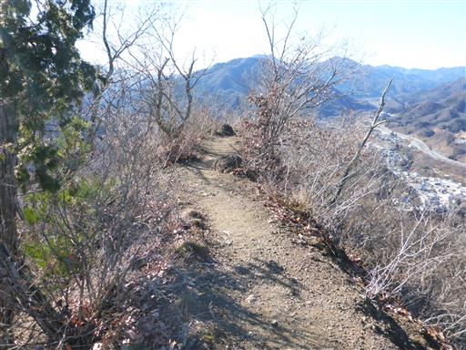
眼下には大月の町が見える。
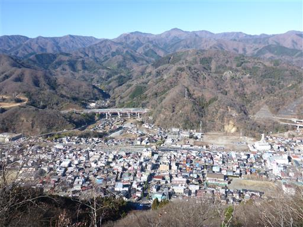
展望の良い尾根道が終わると、急斜面の下りが始まる。
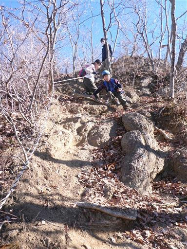
高川山とそこから伸びる長い尾根。
ちょっと歩いてみたいと思わせる、独特の形の尾根だ。
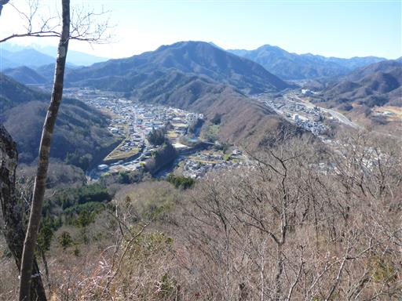
急斜面の道はまだまだ続く。
ロープや鎖に捕まりながら下っていく。
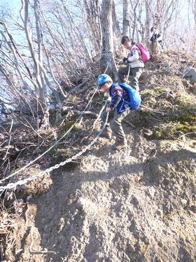
途中に建物があったが、なぜか中は空っぽだ。
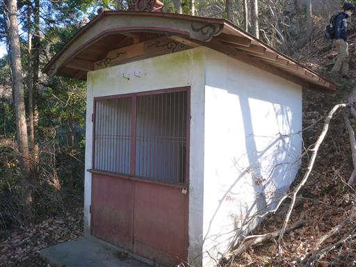
下山地点には鳥居が倒れている。
さきほどの建物は以前は何か祀られていたのだろうか？
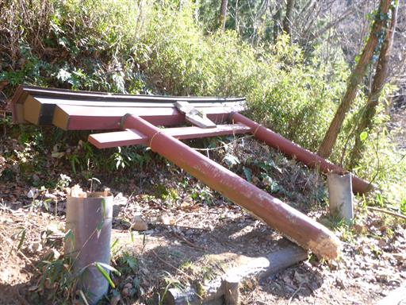
下山。ここから駐車場までしばらく車道歩きだ。
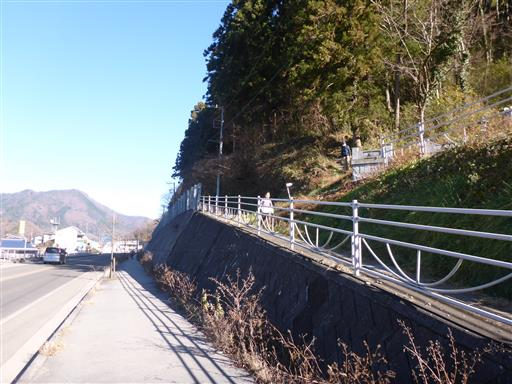
大きい道から細い道に入り、のんびり歩いていく。
奥には岩殿山の岩壁が目立っている。
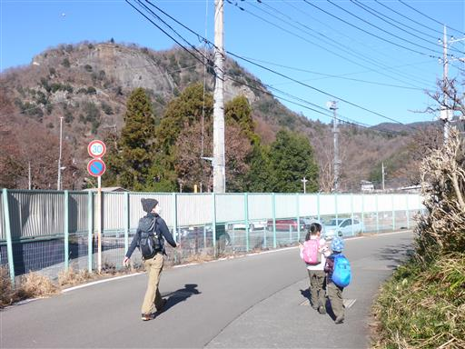
途中で公園があったので、子供たちが遊び出す。
晴れの休日の午後なのだが、他に遊んでいる子供はおらず無人だ。
この雲梯は傾斜があってちょっと難しい。
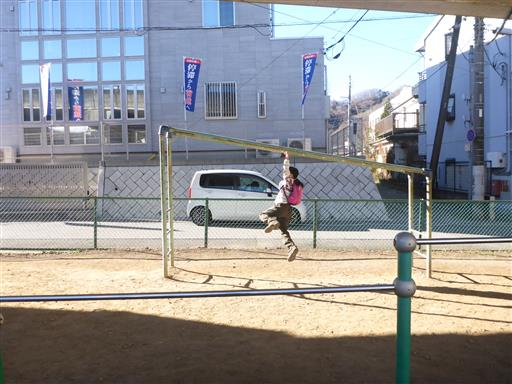
ジャングルジム。高架の下にある公園で、天辺に登ると天井に手が届きそうだ。
10分ほど遊んだら駐車場に戻る。
御前山～菊花山は短いながらも変化のある登山道で、
山頂からの展望も素晴らしく、思っていたよりもずっと良い山だった。
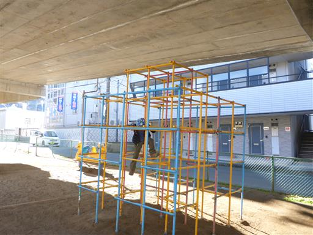